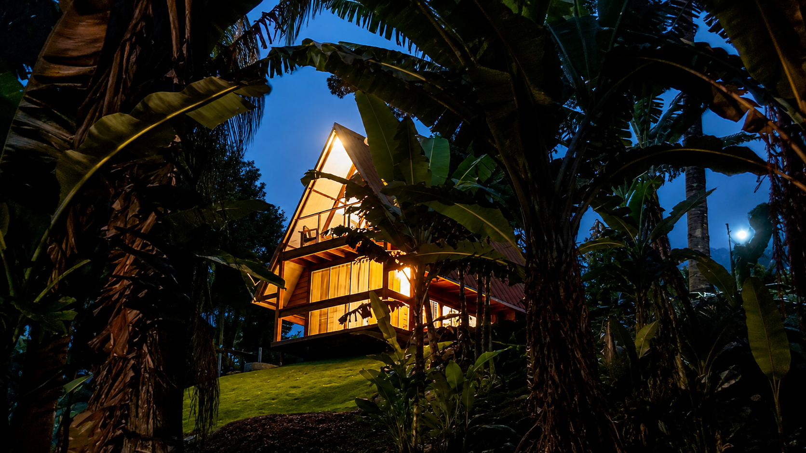

Cercado pela natureza
Mata, montanhas e ar puro da Serra da Mantiqueira.

Um refúgio aconchegante em meio à natureza de São Bento do Sapucaí.
Viva dias tranquilos cercado pela natureza, com ar puro, conforto e o charme da serra.
Localizado na região do Paiol Grande, em São Bento do Sapucaí, o Chalé Gabi é ideal para quem busca descanso, natureza e uma estadia aconchegante na Serra da Mantiqueira.
O chalé acomoda até 4 hóspedes, com um quarto de casal na parte superior e sala integrada à cozinha com sofá-cama.
Diárias a partir de R$ 560
Mata, montanhas e ar puro da Serra da Mantiqueira.

Um espaço pensado para descansar e se sentir em casa.

Na região do Paiol Grande, com clima reservado e silencioso.

Perfeito para casais, famílias pequenas e dias de pausa.

Trilhas, mirantes, restaurantes e experiências ao ar livre.

Consulte disponibilidade e valores diretamente pelo Airbnb.
Passeie pelos ambientes do chalé e sinta a atmosfera que aguarda por você em São Bento do Sapucaí.
Confira outros ambientes e detalhes do Chalé Gabi.
Imagine acordar com o som da natureza, respirar o ar puro da serra e aproveitar dias tranquilos em um chalé pensado para acolher. O Chalé Gabi oferece uma atmosfera simples, charmosa e confortável para quem quer fugir da rotina e viver momentos especiais no interior.

Relaxar e recarregar as energias
Conectar-se com a natureza

Aproveitar São Bento do Sapucaí
Reservar com praticidade pelo Airbnb
 Cozinha com cooktop
Cozinha com cooktop
 Frigobar
Frigobar
 TV de 32”
TV de 32”
 Ar-condicionado
Ar-condicionado
 Aquecedor a óleo
Aquecedor a óleo
 Banheiro com aquecimento a gás
Banheiro com aquecimento a gás
 Sofá-cama
Sofá-cama
 Vista para a natureza
Vista para a natureza
 Aceita pets de pequeno porte, máximo 2
Aceita pets de pequeno porte, máximo 2
O Chalé Gabi está localizado na região do Paiol Grande, em São Bento do Sapucaí - SP, uma área tranquila, cercada pela natureza e próxima aos principais passeios da região.
Entre montanhas, trilhas, cafés charmosos e boa gastronomia, São Bento do Sapucaí oferece experiências perfeitas para quem quer descansar, passear e aproveitar a Serra da Mantiqueira.
Passeios
 Cafés
Cafés
 Gastronomia
Gastronomia
 Fim de tarde
Fim de tarde
Dica: horários de funcionamento, valores e necessidade de reserva podem variar. Consulte antes de sair.
Confira disponibilidade, valores e detalhes completos diretamente pelo Airbnb.
Reservar pelo Airbnb ↗